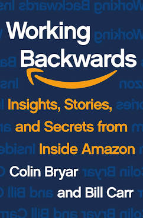

Working Backwards, by Bryar and Carr
Friday September 3, 2021
It's kind of an ad for the authors' consulting, but it's also interesting to hear how Amazon works. They quote a lot of shareholder letters (NDA concerns?) and are no doubt biased, but some Amazon ideas seem okay. The chapter organization is decent:
- "Building Blocks: Leadership Principles and Mechanisms"
- I've heard there are also team-specific (and other?) "tenets" that sort of layer on top of the Leadership Principles.
- "Hiring: Amazon's Unique Bar Raiser Process"
- Quite structured, focused on specifics/data/anecdotes, with a facilitator expert in hiring process.
- "Organizing: Separable, Single-Threaded Leadership"
- Make it somebody's only responsibility. They don't use two-pizza teams that much any more, but this single-threaded idea is still emphasized.
- "Communicating: Narratives and the Six-Pager"
- They listened to Tufte! No PowerPoint!
- "Working Backwards: Start with the Desired Customer Experience"
- They write a press release and FAQ for the thing, as if they're launching it today, before they decide to do it at all.
- "Metrics: Manage Your Inputs, Not Your Outputs"
- Makes a lot of sense, assuming you really know how inputs connect to outputs... Studying that is probably somebody's job.
And then they talk about Kindle, Prime, Prime Video, and AWS in part two.

"In its first shareholder letter back in 1997, Amazon's first year as a public company, you'll find the phrases "Obsess Over Customers," "It's All About the Long Term," and "We will continue to learn from both our successes and our failures." One year later the term "Operational Excellence" entered the discussion, completing the four-faceted description of Amazon's corporate culture that endures today." (page xi)
"Of course, these four cultural touchstones don't quite get at the "how," that is, how people can work, individually and collectively, to ensure that they are maintained. And so Jeff and his leadership team crafted a set of 14 [now 16] Leadership Principles, as well as a broad set of explicit, practical methodologies, that constatntly reinforce its cultural goals. These include: the Bar Raiser hiring process that ensures that the company continues to acquire top talent; a bias for separable teams run by leaders with a singular focus that optimizes for speed of delivery and innovation; the use of written narratives instead of slide decks to ensure that deep understanding of complex issues drives well-informed decisions; a relentless focus on input metrics to ensure that teams work on activities that propel the business. And finally there is the product development process that gives this book its name: working backwards from the desired customer experience." (page xi)
Around page 12, they talk about how the Leadership Principles tried to capture the culture, not create it. They were first listed in 2004-2005, ten years after Amazon was founded.
"In my tenure at Amazon I heard him [Jeff Bezos] say many times that if we wanted Amazon to be a place where builders can build, we needed to eliminate communication, not encourage it." (page 61)
"The metrics used to measure progress were agreed upon. For example, In-stock Product Pages Displayed divided by Total Product Pages Displayed, weighted at 60 percent; and Inventory Holding Cost, weighted at 40 percent." (page 70)
Reading this quickly, it seems to make sense. But the values are on different scales: one is between zero and one (I hope) and the other is a cost, presumably measured in dollars. So what is this really?
Also, for product pages, an ebook is always in stock, so is there an incentive to show ebooks rather than physical books? Is that desirable?
"If you're good at course correcting, being wrong may be less costly than you think, whereas being slow is going to be expensive for sure." (page 71, quoting the 2016 Bezos shareholder letter)
"Sometimes it's best to start slow in order to move fast." (page 71)
"Fitness Functions Were Actually Worse Than Their Component Metrics
Two-pizza teams had been meant to increase the velocity of product development, with custom-tailored fitness functions serving as the directional component of each team's velocity. By pointing each team in the right direction and alerting them early if they drifted off course, fitness functions were supposed to align the team uniquely to its goals. We tried them out for more than a year, but fitness functions never really delivered on their promise for a couple of important reasons.
First, teams spent an inordinate amount of time struggling with how to construct the most meaningful fitness function. Should the formula be 50 percent for Metric A plus 30 percent for Metric B plus 20 percent for Metric C? Or should it be 45 percent for Metric A plus 40 percent for Metric B plus 15 percent for Metric C? You can imagine how easy it was to get lost in those debates. The discussions became less useful and ultimately distracting—just another argument that people needed to win.
Second, some of these overly complicated functions combined seven or more metrics, a few of which were composite numbers built from their own submetrics. When graphed over time, they might describe a trend line that went up and to the right, but what did that mean? It was often impossible to discern what the team was doing right (or wrong) and how they should respond to the trend. Also, the relative weightings could change over time as business conditions changed, obscuring historic trends altogether.
We eventually reverted to relying directly on the underlying metrics instead of the fitness function. After experimenting over many months across many teams, we realized that as long as we did the up-front work to agree on the specific metrics for a team, and we agreed on specific goals for each input metric, that was sufficient to ensure the team would move in the right direction. Combining them into a single, unifying indicator was a very clever idea that simply didn't work." (pages 73-74)
"What was originally known as a two-pizza team leader (2PTL) evolved into what is now known as a single-threaded leader (STL). The STL extends the basic model of separable teams to deliver their key benefits at any scale the project demands. Today, despite their initial success, few people at Amazon still talk about two-pizza teams." (page 75)
"When the retail, operations, and finance teams began to construct the initial Amazon WBR [Weekly Business Review], they turned to a well-known Six Sigma process improvement method called DMAIC, an acronym for Define-Measure-Analyze-Improve-Control." (page 124)
"Amazon takes this philosophy [of understanding how inputs affect outputs] to heart, focusing most of its effort on leading indicators (we call these "controllable input metrics") rather than lagging indicators ("output metrics")." (page 124)
"When Amazon teams come across a surprise or a perplexing problem with the data, they are relentless until they discover the root cause. Perhaps the most widely used technique at Amazon for these situations is the Correction of Errors (COE) process, based upon the "Five Whys" method developed at Toyota and used by many companies worldwide." (page 132)
"Anecdotes and exception reporting are woven into the [Weekly Business Review] deck." (page 135)
"Data Combined with Anecdote to Tell the Whole Story: Numerical data become more powerful when combined with real-life customer stories." (page 142)
"These stories remind us that the work we do has direct impact on customers' lives." (page 143)
"Data and anecdotes make a powerful combination when they're in sync, and they are a valuable check on one another when they are not." (page 145)
"Even the best process can only improve the quality of your decision-making; no process will make the decision for you." (page 159)
"With each modification [of the org structure], the scope of each leader's responsibilities would become narrower, but the intended scale of each role was greater. At most companies, reducing a leader's scope would be considered a demotion, and in fact there were many VPs and directors who saw each of these changes in that way. At Amazon, it was not a demotion." (page 174)
There's some interesting organizational psychology here; maybe it's obvious, but it seems interesting to me.
"Steve asked Gregg to build out a hardware organization, which he did with the code name Lab126 (the 1 and 26 stood for the letters A and Z) and earmarked a meaningful amount of capital to the effort." (page 181)
"... we learned from studies that the average consumer would only bother to connect their iPod to their PC once a year. That meant most people walked around without the latest music on their devices. It was known as the "stale iPod" syndrome." (page 183)
This kind of thing is fascinating - often I would never guess the real behavior of real people, on average.
"... in Amazonian terms, a "strong general athlete" (SGA)." (page 202)
Seems like this phrase shows up sometimes on Amazon job descriptions...
"Jeff and other Amazon leaders often talk about the "institutional no" and its counterpart, the "institutional yes." The institutional no refers to the tendency for well-meaning people within large organizations to say no to new ideas." (pages 203-204)
"Jeff said he wanted to build a moat around our best customers. Prime would be a premium experience for convenience-oriented customers." (page 208)
Wrapping up with recommendations:
- "Ban PowerPoint
- Establish the Bar Raiser hiring process
- Focus on controllable input metrics
- Move to an organizational structure that accomodates autonomous teams with single-threaded leaders
- Revise the compensation structure for leaders
- Articulate the core elements of the company's culture
- Define a set of leadership principles
- Depict your flywheel" (pulled from pages 261-262)